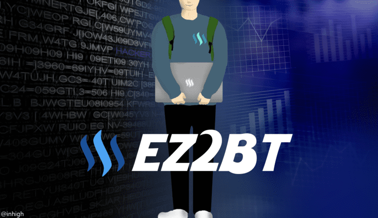

2020년 새로운 블로그 런칭하다.

나는 정말 다양한 많은 주제를 가지고 활동하면서 나만의 공간 즉, 정리의 필요성을 느꼈다. 사람은 자주 사용하는 내용은 오랫동안 기억한다. 하지만 아무리 인상 깊었던 내용도 일정 시간이 흐르면 금세 까먹는다. 누군가 예외는 있겠지만 과거에 관한 내용을 꺼내어 그 당시 진솔한 느낌을 표현하기 어렵다.
이를 처음 직면한 경우는 고등학교 3학년 대학교 입시를 위한 자기소개서 작성이다. 분명 남들보다 호기심을 가지고 여러 분야에서 활동했지만 문항에 맞는 나에 관한 내용을 작성하는 게 어려웠다. 그럼에도 불구하고 컴퓨터 분야를 배우고 싶은 한가지 목표가 확실했기 때문에 지금의 나를 존재하게 만들지 않을까 싶다.
사실 옛날부터 네이버 블로그, 티스토리, 스팀잇 등 아주 많이 활동했다. 근데 왜 깃허브 호스팅으로 넘어왔을까? 정답은 조금 더 프로그래밍을 관심갖고 개발하기 위해서다. 깃허브는 대학교 장학생 프로그램 참가하면서 알게 되었다. 블로그 호스팅을 위해 찾던 중, Js, React 등을 다룰 수 있는 Gatsby, Hexo 프레임워크를 발견했다. 여기서 심플하고 퍼포먼스 테스트 점수가 높은 테마를 정해 deploy 시켰다.
이곳은 앞으로 나에 대한 프로필 작성을 목표한다. 그 과정 중에서 많은 컴퓨터 관련 학술 및 프로젝트에 대해 다뤄보겠다. 가끔 개인적인 일상생활을 더불어 여행, 맛집, 활동 등 소개하겠다. 블로그 프로필 약식 내용에 "'Habit is second nature"을 넣어뒀다. 이는 쉽게 말하자면 "좋은 습관을 가지자"이다.
닉네임은 왜 “Habit20” 변경했나? 기존 닉네임은 너무 단순해서 조금 색다로운걸 찾다가 변경했다. 앞서 나온 약식과 더불어 2020년 기념해서 “20” 붙였다. 아마 대부분 활동은 변경한 닉네임으로 참가하고 문제를 풀지 않을까 싶다.
끝.